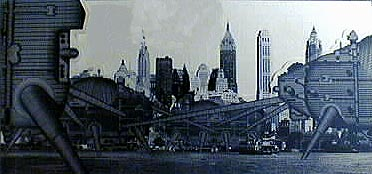

By William Menking
|
Welcome to New York, New York. No, not New York, New York, Las Vegas- the theme park as city. But New York, New York, New York-the city as theme park. Here, you can visit recently created adult theme lands: Soho and Chelsea (Artland), Battery Park City (Financial Fantasyland), Chinatown (Foodadventureland), and the “wild” Lower East Side (Real Estate Frontierland). Since the transformation of a once lively fourteen square block district of artists lofts and commercial markets in lower Manhattan into a themed “South Street Seaport” shopping “experience,” New York is increasingly being zoned into such sanitized districts.1 To visit real, which is to say, not re-invented urban fantasy, you will need to leave Manhattan island and venture out to areas like the disheveled and disinvested Coney Island neighborhood in Brooklyn.
 (Walking City New York, Ron Herron, 1964) A short distance from your Midtown Manhattan hotel room you can visit the latest and most fantastic new urban themed land-Times Square. That’s where Disney Corporation’s Imagineering Research and Development Unit, local architects and politicians have created the City’s latest entertainment experience in the renovated New Amsterdam Theater. Here, in what was once the 'Crossroads of the World,' you will also find similar ventures from Madame Tussaud’s Wax Works, Cinema Ride (a flight simulation experience), scores of ersatz themed restaurants and a soon to open Planet Hollywood Hotel with its own themed rooms. Finally, in the heart of the district, Virgin Records has opened what it calls the world’s largest record store in a huge Piranesian-like shopping mall. You may remember Times Square from ten years ago when a single block from Broadway to Eighth Avenue along 42nd Street had ten enormous movie palaces, some open 24 hours a day. This was where many young African Americans from Harlem went to the cinema; for their neighborhood, despite a population of 200,000 had no movie theaters. The block also contained countless inexpensive all-night restaurants and fast food stands, XXX rated book stores, peep shows and sex shops, and pin ball arcades; the “dark gray areas” that ARCHIGRAM claimed “all cities required.” 2 Spilling onto its sidewalks were executives from midtown skyscrapers, workers from the adjacent garment district, and elegantly dressed theater patrons. As one of the cityvs most authentic spectacles, 42nd Street was the very epitome of ARCHIGRAM’S notion of “messy vitality.”3 This “messiness,” unfortunately, led to 42nd Street’s undoing.4 Real estate developers, who long coveted this valuable stretch of midtown property, joined together in 1987 with city politicians, to create “The 42nd Street Development Corporation.”5 This public/private entity hoped to transform the street from what they claimed was a “sleazy” and “underutilized” area of the city-into a sleek extension of the adjacent corporate office district.6 In 1989, the theaters were condemned; the young African-Americans were sent back to Harlem; and Philip Johnson was commissioned to design a series of massive skyscrapers he claimed were “deconstructive.”7 However, the office market collapsed the following year and the project was put on hold. Except for a single hot dog stand (now closed), an XXX rated book store and theater, the city was stuck with a deserted block, a mere remnant of what Lawrence Alloway might have had in mind when he spoke of a “symbol thick scene, crisscrossed with the tracks of human activity.”8 The Development Corporation then commissioned Robert A.M. Stern to “re-animate” the abandoned block. 9 Stern presented an urban design plan, or marketing scheme, that would decorate the facades of the existing historic buildings with layers of advertising signs that replicate or recall Broadway’s history as the “Great White Way.”Stern asserted that his plan, which excluded skyscrapers, would make 42nd Street look “noisy, historically layered...unplanned...bold and brash,” exactly what the street had been before it was condemned. 10 It should be pointed out that Stern’s “re-animated” new street is what property speculators call a “tax payer,” i.e. a holding action until the market rebounds for Johnson-like skyscrapers. Well, what does ARCHIGRAM have to tell us about contemporary “situations” such as 42nd Street? Are their paper concepts still relevant to the current transformation of our old centralized and heterogeneous cities? Can the “lads” from London help us avoid mistakes like the one New York is making? Setting aside the possibility of “personal environments” such as “Suitaloons,” “Gasket Homes,” and “Expendable Place Pads” as entirely credible in today’s world of virtual reality, but only partial solutions for everyday life. 11 We cannot look to ARCHIGRAM’S “Independent City Modules,” “Seaside Bubbles,” “Plug-In Cities,” or, Ebenezer Howard-like “Underwater Cities” for help with today’s center city.12 Their notion of the city as a series of independent quarters or zones similar to the human brain- “a collection of cells with an extraordinary high concentration of absolutely essential functions and energy,” seems, 30 years later, to lead us to the zoned and controlled spaces of “Garden City” suburbs, corporate campuses and shopping malls. In fact, the same political and property development forces that are malling 42nd Street are also attempting to turn it into an “Independent Module” using a state chartered entity called a Business Improvement District (BID). These BID’s employ underpaid private security forces, sanitation services, etc., to create privatized spaces modeled on sanitized “Garden Cities.” Furthermore, these service workers tending these privileged areas go home to their “(Un)-Plugged” neighborhoods, or “Bubbles,” where there is little or no security, sanitation, or decent schools. We might instead reconsider ARCHIGRAM’S collages of an oil platform in Trafalger Square, “Tuned Suburb” of 1968, or the “Instant City” programs of 1970.13 These “Urban Action Tune-Ups” offer the possibility of preserving the historic fabric and space of the city while infiltrating “events, displays and educational programs” into its spaces.14 The city, Peter CookÐÐreminds us, “lives equally in its past, the present where we are and the future.”15 But, Americans, sadly seem disillusioned with the present and seem to have lost all hope in the future. As Disney’s new “Main Street,” 42nd Street, is being redesigned or refurbished by Robert Stern as a BeauxArts pastiche of historic signs, what urban historian Christine Boyer calls the “represented image of the city...that manipulate(s) scenery, ornament and facades to underscore the sentiment of their play...not the real thing.”16 However much Stern claims his plan recontextualizes the city, he is simply creating another festival marketplace, devoid of the social dynamic that made Times Square an authentically vibrant “situation.” Stern intends his proposal to be fun, but lacking ARCHIGRAM’S critique and intelligence, it is simply a “manipulated recreation of a city”-not the real thing.17 Of course, ARCHIGRAM has been criticized for being too accepting of expendable architecture and consumer culture. Kenneth Frampton accuses them of raging utopianism, and “furthering the domain of an optimized technology.”18 However, like the “Independent Group,” their acceptance of “space-age commodities” is understandable in the austerity of postWorld War II England, which had little or no experience with a consumer culture of disposable objects.19 It is easy to find fault with their research into the milieu of commercial mass culture from the point of view of modernist rationalist perspective. What Dan Graham points out about American Pop Artists seems likewise to apply to groups like ARCHIGRAM, Superstudio, Ant Farm, Hans Rucker and early Coop Himmelblau, etc. In his essay Art in Relation to Architecture/Architecture in Relation to Art, Graham asserts that Pop Art “appears to equivocate in its attitudes towards commercialized mass culture, even adopting some its conventions and sentiments.”20 But, he goes on toÐ Ðargue that “European leftist critics, particularly those investigating architecture unconsciously equate mass culture with fascist irrationalism, seeing rationalist socialism as both a negation of degraded mass culture and as the only constructive solution to the problems it confronts.” In other words, they see “present day American society in terms of Europe in the 1930's.”21 The critique of this “leftist-theoretical approach” according to Graham is blinded to the possibilities inherent in architectural research entering into the field of popular mass culture. ARCHIGRAM, perhaps under the influence of Reyner Banham, Cedric Price and with the example of the Independent Group, were among the first to realize that high modernism claimed to be above the cultural domination of these new forms, and that architecture and advertising were identical and that market and media forces gave the work a different meaning, one beyond the architect's control. Today it matters as much which magazine a new building appears in as it does the use to which the building is put. ARCHIGRAM, certainly working in a different context than the present day, realized this about architecture thirtyfive years ago and this may be their most important legacy. Further, the entire anti-establishment youth culture that developed in the 1960s in Europe and America was indeed as naive as ARCHIGRAM. It was blind to the contradictions of a future of unlimited leisure in which, as the Situationist International pointed out, “each individual might construct a life, just as in the old world a few privileged artists had constructed their representations of what life could be.”22 But without this naivete, the student movements of the 1960s would have been sucked into the boring certainties of professional standards or the easy conventions of liberal political discourse. I cannot remember when I first became aware of ARCHIGRAM. It may be that by the time I reached the University of California, Berkeley architecture school in the late 1960’s they were simply in the cultural air that included Fillmore Auditorium posters, Merry Prankster handbills and the SDS broadsheets that were pasted onto walls of the architecture school. But, students in those years realized that ARCHIGRAM like these other cultural phenomena stood for possibilities and protest. Yet, something else needs to be pointed out about ARCHIGRAM. Reread Warren Chalk’s post 1968 critique of “the piped environment of car crazy L.A.” which he claims has “outlived its usefulness.”23 ARCHIGRAMERS, in fact, may have grown and changed their position or even wanted it both ways; but as Peter Cook has written, they always stood “for a passionately democratic respect for the competing discourses of urban culture” and for the power of their group to propose individual or competing notions.”24 In short, they changed with the times, especially after 1968, without compromising their critique. How much more exciting this notion is as a possibility than the calculated BeauxArts fantasies or privatized neighborhood of contemporary New York. Americans should have an interest in ARCHIGRAM, not only because their critique is predicated on issues still important to the American city, but also because they simply thought and made drawings instead of compromising. Although Kenneth Frampton criticizes ARCHIGRAM’S drawings as a “projection of images in...inaccessible terms” there is another way to look at their work. Liane Lefaivre has pointed out that groups like ARCHIGRAM “used the language of architecture to challenge the stylistic and social bulldozing carried out by the dominant architectural trend of the time.”25This is especially important, given that American architects and urbanists today are faced with an economy similar to the one confronting ARCHIGRAM in the 1960s. Younger practitioners, many of them formerly students of Peter Cook and ARCHIGRAM, are using the same critical strategies to “crash the gates of today’s accepted formal vocabularies by incorporating into their architectural designs unconventional references to the urban context.”26ÐÐToday, the economy (and much of the architecture profession must be held partly responsible) seems to dictate that architecture is a luxury it can hardly afford. American practitioners today build less than 15% of all the new buildings. As in the 1960s, drawing (today computer imaging) increasingly becomes an end in itself, rather than simply the means to build. Further, many of ARCHIGRAM’S proposals feature infrastructure improvements to the existing city and this could not be more important for the younger generation of students just coming-out of architecture school. It will be the challenge of this generation to rebuild the infrastructure of our decaying cities; let us hope they give us cities as much fun as those projected by the young ARCHIGRAMERS. Finally, ARCHIGRAM’S fantastic and playful, yet profound, critique of the accepted norms of architecture and urban planning practice are not directed against the promises of modernism, in which they continue to believe; but rather, only against their postWorld War II alignment with development, profits and lack of fun. Earlier modernists, such as Le Corbusier and Ray and Charles Eames, were every bit as involved in the utopian technology of their day as the ARCHIGRAMERS in the first cybernetic revolution. Clearly ample precedents exist for ARCHIGRAM’S pop contextualism. ARCHIGRAM would probably disagree with my belief in master planning. But, we would both celebrate “irreverent play” and Peter Cook’s claim for the “intensity and vibration of metropolitan life...as somehow more conducive to all the great positives: creativeness, emancipation, involvement and enlightenment,”-in other words in the modernist ideals. Had we trusted ARCHIGRAM’S Òmessy vitality” and celebration of “urban disorder...as found,” 42nd Street would still be authentic, not a Disney “Main Street,” that’s “hopelessly bland, upbeat and robot like,” to borrow from The New York Times’ recent review of Disney’s musical Beauty and the Beast, now playing daily at the New Amsterdam Theater on 42nd Street. |
|
| And, yet, the situation is not irretrievable. For, like Disney’s suburban theme parks, which are built on concrete pads above an underground city for its workers and flow of detritus, the subway still rumbles under Disney New York. This monument to the vitality of a truly public urban social space is something ARCHIGRAM would understand. I am sure there is an old 42nd Street somewhere in the depths of the “Walking City. | |